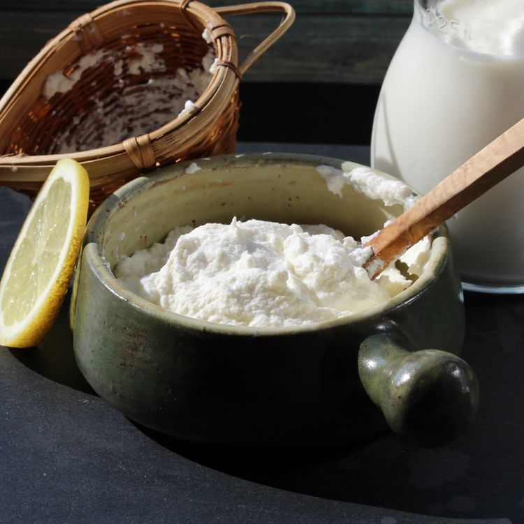

Recipe for ricotta cheese

Description
Recipe for making ricotta !
Ingredients
This is the list of ingredients you need.
- 2 L milk
- 80 ml of lemon juice
- 1 teaspoon salt
Steps
- Pour milk into a saucepan set over medium heat. Heat milk until it registers 194 degrees F (90 degrees C) on an instant-read thermometer, about 5 minutes. Remove from heat.
- Stir lemon juice and salt slowly into warmed milk. Let stand until milk curdles, 10 to 15 minutes.
- Line a fine-mesh strainer with cheesecloth and place it over a large bowl. Pour milk mixture carefully into the lined strainer. Let stand until most of the liquid has drained off the ricotta, about 15 minutes. Discard drained liquid.
Done!
Enjoy your homemade ricotta !
Retour